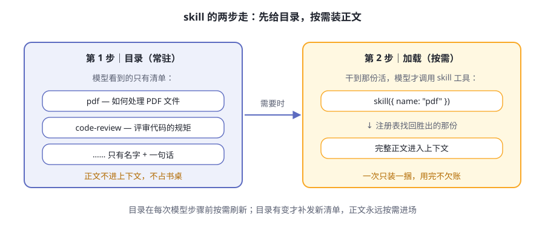
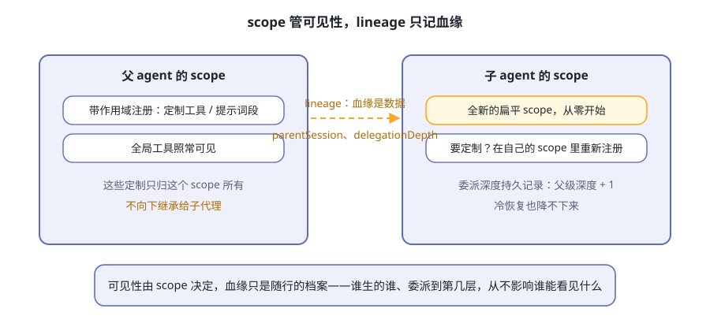

第10章 连接外部世界¶
先接一个你可能真会遇到的任务：
"我们依赖的一个开源库上个月改了 API。帮我查清楚它改了什么，把我们的代码改对，把结论记进长期记忆；同时派人并行验证一下旧版本还能不能跑。"
别急着想要怎么干，先看这个任务会依次敲开哪些门：
表10-1 一个任务穿过五扇门
| 动作 | 敲开的门 | 门后发生什么 |
|---|---|---|
| 查清楚 API 改了什么 | web | 搜索网上资料，抓下关键页面 |
| 看清我们代码哪里在用旧 API | LSP | 问语言服务器：定义在哪、谁在引用 |
| 按团队规矩改代码 | skill | 加载一份"怎么干这类活"的说明书 |
| 把结论记进长期记忆 | MCP | 一个第三方记忆服务器替它记账 |
| 并行验证旧版本 | subagent | 把子任务委派给另一个 agent |
一个任务，五扇门。这一章把每扇门认全：通向哪、解决什么问题、配一个真实例子，最后再看一扇挂着"施工中"牌子的门。
阅读提示 前面九章，器官都在电脑里。可真实的活在电脑外面：第三方工具、代码智能、网上资料，甚至别的 agent。这一章讲 dsh 怎么把门开出去，以及每扇门守的是什么规矩。
五扇门，都是"外设"¶
先看全景（图10-1）：

图10-1 dsh 的五扇门
五扇门有个共同身份：可选能力。官方文档在 LSP、web、subagent 的子系统说明里反复写着同一句话——"不属于 agent loop（智能体循环）主干"；skill 的说法是"位于核心控制主干之外"。意思都一样。
换句话说：把五扇门全关上，dsh 依然是一个完整的 agent——轮次照转、工具照跑、日志照记（第 5、6 章讲过的那套骨架纹丝不动）。门是外接设备，不是本体器官。
这背后还是第 4 章的思想：门都挂在缝（seam）上，缝的一侧是五花八门的提供方，另一侧是模型熟悉的工具接口。换提供方，模型毫无察觉。
MCP：万能插座¶
MCP（Model Context Protocol）是行业里的通用协议，官网在 modelcontextprotocol.io：任何人用任何语言实现一个 MCP 服务器，任何会说 MCP 的客户端都能插上它。dsh 这边的桥是 @deepseek-ai/dsh-mcp-client：连接外部服务器，把它们注册进工具注册表，变成模型可用的原生工具。
类比：dsh 自带的手是"原厂配件"，MCP 是通用插座——别人造的手，插上来就能用。插座的形状由协议规定，手是谁造的无所谓。
工具叫什么名？ 每个工具都带"服务器限定"的姓：mcp__<serverName>__<工具名>。接一个名为 github 的服务器，它的 create_issue 在模型眼里就是 mcp__github__create_issue。两个服务器都有 search 工具？不打架，各在各的命名空间里。
名字太长或含怪字符也不怕：桥会按确定性规则规范化，保证不同工具绝不撞名。
怎么接？ 两种传输（表10-2）：
表10-2 MCP 的两种传输
| 传输 | 怎么连 | 谁负责活着 |
|---|---|---|
| stdio | dsh 拉起对方的可执行文件当子进程，走标准输入输出 | dsh 负责：随插件生命周期启动和停止 |
| streamable-http | 连接一个 HTTP URL | 上游服务必须已经在运行 |
桥对现实世界考虑得相当周到，两个机制值得记住：
- 热替换。改一行配置，桥就断开重连，不用重启整个进程；
serverName不变，工具名一字不差。 - 重连预算。stdio 子进程崩了，桥按指数退避重启：首次 500 毫秒，每次翻倍，封顶 30 秒；一次中断里连败 10 次就彻底停手，等下次重载——偶尔崩溃的服务器能无限自愈，崩溃循环的服务器不会被无限重启。
注意 stdio 桥在启动子进程前，会主动移除环境中名称通常表示凭据的变量和所有
DSH_*变量；其余环境变量仍会继承。上游服务器还需要额外密钥时，写进配置项的config.env，别把密钥直接糊进 YAML。
边界也说清楚：这座桥目前只搬运 MCP 的工具能力，协议里的资源和提示词模板还在暂缓清单上。
真实例子：给 agent 接一块外挂记忆¶
官方 mcp-memory 配置（配使用指南）把三个第三方记忆系统接成 dsh 的外挂记忆，三份参考配置都默认关闭（表10-3）。官方特意声明：收录只作互操作参考，不代表认可或合作。
表10-3 mcp-memory 的三选一
| 系统 | 传输 | 上游前置条件 |
|---|---|---|
| Memorix | stdio | Node 22.18+，全局安装 memorix@1.3.0 |
| MCP Reference Memory | stdio | 全局安装 @modelcontextprotocol/server-memory@2026.7.4 |
| Engram | stdio | Go 1.25.10+，或安装匹配的发布版二进制 |
选一个，装好上游，一行命令启用（以 Memorix 为例）：
npm install --global memorix@1.3.0
dsh web --patch "$PWD/apps/cli/config/examples/mcp-memory/memorix.cordis.yml"
--patch 就是第 4 章讲过的覆盖层：往组合上多盖一层补丁，不传就一切照旧。官方给的验收方法是一套三步接力：在会话 A 里让模型记住一个带唯一后缀的值；新建会话 B（不复制会话 A 的对话），问它记不记得，确认它调用了记忆服务器的检索工具；再让它用这个偏好给个建议。第二步能过，才叫真的跨会话记忆。
LSP：IDE 同款理解力¶
LSP（Language Server Protocol）是编辑器世界的标准：每种语言有自己的语言服务器，提供查定义、找引用、看诊断这类服务。你的编辑器按 F12 能跳定义，靠的就是它。
dsh 把这套接成一条能力缝，拆成三个包（表10-4）：
表10-4 LSP 缝的三件套
| 包 | 角色 | 人话 |
|---|---|---|
dsh-lsp |
Service Definition | 能力注册表：谁注册了、按扩展名归谁管 |
dsh-lsp-stdio |
通用提供方 | 通用的语言服务器宿主，按查询临时打开文档 |
dsh-tool-lsp |
消费方 | 模型看到的 lsp 工具 |
这条缝刻意做得很"抠"：恰好公开四种语义操作，不多不少（表10-5）。
表10-5 LSP 的四种操作
| 操作 | 回答的问题 |
|---|---|
| goToDefinition | 这个符号定义在哪？ |
| findReferences | 谁在用它？（始终包含声明本身） |
| goToImplementation | 实现在哪？ |
| hover | 这个符号的说明是什么？ |
这份清单是"闭合"的：想加第五种操作，必须同时改缝、提供方和工具，编译器会逼你三处一起改完。缝也不提供通用协议逃生口——模型永远不能绕过这四个操作，对语言服务器提任意要求。
注意这里的分工：提供方注册的是能力而非工具；面向模型的工具名、schema 和提示词指引，唯一的所有者是 dsh-tool-lsp。所以换语言服务器，只换传输，模型请求导航的方式一个字不变。
还有个细节见功夫：协议内部用从零开始的 UTF-16 坐标，而模型习惯从 1 数数。工具层在进出时悄悄换算，两边谁也不用迁就谁。
真实例子：在一个 TypeScript 项目里问 agent"这个函数定义在哪？谁调用了它？"它可以不靠文本搜索瞎猜，而是通过 goToDefinition、findReferences 问语言服务器，拿到的就是你在编辑器里按 F12 得到的那种答案。
LSP 还有个跨章伏笔：stdio 宿主基于 ctx.fs 和 ctx.subprocess 干活。等这两个服务换成沙箱实现（下一节就有例子），语言服务器会跟着搬进沙箱，宿主本身一行不用改。
skill：按需加载的诀窍¶
skill（技能）是成捆的"怎么干某类活"的说明书。机制分三层：
- 提供方注册表（
ctx.skills）：技能从哪来。默认提供方扫本地目录，也可以换嵌入式或远程提供方——面向模型的约定不变。 - 目录：模型看到的清单，只有名字和一句话描述，没有正文。
- 加载器：模型调用
skill工具，胜出那份的正文才进上下文。
两步走的妙处在图10-2：

图10-2 skill 的两步加载
技能从哪些目录来？ 本地提供方按 rank 扫六个根目录，重名时 rank 小的直接赢（表10-6）：
表10-6 技能发现优先级
| Rank | 来源 | 位置 |
|---|---|---|
| 100 | 项目 .dsh 目录 |
<项目根>/.dsh/skills |
| 200 | 项目 .agents 目录 |
<项目根>/.agents/skills |
| 300 | 自定义目录 | 配置里自己加的目录 |
| 400 | 用户 .dsh 目录 |
<dsh 主目录>/skills |
| 500 | 用户 .agents 目录 |
<agents 主目录>/skills |
| 600 | 随包技能 | 部署方配置的随包目录 |
项目根是包含 .git 的最近祖先目录。技能文件要么是目录包（<name>/SKILL.md），要么是单个 Markdown（<name>.md），名字必须 kebab-case。留意 .agents/skills 这个根：它不是 dsh 专属的命名，为别的 agent 工具写的技能，在这里常常直接能用。
目录本身也有生命周期：在会话的第一个合格时机注入初始目录，之后每次模型步骤前比对一遍——目录变了才补发一份完整替换，没变就绝不打扰。这套机制保证了：一百个技能躺在磁盘上，平时只占一份清单的钱。
真实例子：在项目里建 .dsh/skills/deploy-checklist.md，写上你们团队的上线检查清单。以后说"准备发布"，agent 会在目录里看到它、按需加载正文、照单执行。团队的隐性知识，从此是 agent 能借用的器官。
web：联网的眼睛¶
web 缝只有两项操作——搜索与抓取，共用一个提供方选择服务（表10-7）：
表10-7 web 家族
| 包 | 职责 |
|---|---|
dsh-web |
Service Definition：提供方注册、选择与共享错误词汇 |
dsh-web-search-exa／-perplexity／-deepseek |
三个搜索提供方 |
dsh-web-fetch-http |
抓取提供方：公共 HTTP/HTTPS 资源 |
dsh-tool-web |
模型看到的 web_search 与 web_fetch |
提供方怎么选？规则铁面无私，完全不看注册顺序（表10-8）：
表10-8 提供方选择规则
| 情况 | 结果 |
|---|---|
| 配置了明确的 id，且已注册、可用 | 用它 |
| 配置了，但没注册或不可用 | 明确报错（缺的、不可用的，各报各的码） |
| 没配置，恰好只有一个可用 | 自动选中 |
| 没配置，却有多个可用 | 明确报错"歧义"——绝不悄悄用先注册的那个 |
两个细节见设计品味：
- 非 2xx 响应是结果，不是错误。抓一个返回 404 的页面，得到的是带着状态码的结果，而不是异常——网页的状态本身就是信息。
- 本地抓取后端会拦截私有网络目标。现行实现只放行公共单播地址：DNS 解析走发现校验、连接地址固定、每一跳重新校验——官方原话是"这些检查会阻止通过 SSRF 访问非公开目的地址"。这道防线做进了零件里（本书写作早期它曾留给部署配置，后来上游补上了）——呼应第 9 章的主题：安全边界按部署画。
真实例子：问 agent 一个训练数据里不可能有的新近事件。你会看到它用 web_search 扇出查询（一次最多并发好几个、相同查询只跑一遍），拿回带 URL 的来源清单，再用 web_fetch 精读关键页面——HTML 会被渲染成 markdown，省下真金白银的 token。
subagent：委派之门¶
最有意思的一扇门。subagent 递给模型一个统一的委派动作：把一部分活交给另一个 agent。
和 bash 只允许一个执行器不同，ctx.subagents 是按名字注册、多提供方共存的注册表（表10-9）：
表10-9 官方提供的子代理提供方
| 提供方 | 干什么 |
|---|---|
| spawn（进程内） | 启动全新的进程内子代理，不带父级对话 |
| fork（进程内） | 以父级已完成的历史记录为种子启动 |
| acp | 通过 ACP（Agent Client Protocol）启动进程外子代理 |
| Harness SDK | 通过 TypeScript SDK 启动进程外的 Harness 子代理 |
| 两个可选集成 | 委派给成熟的第三方编程 agent 产品；用 dsh plugin 单独安装，移除即撤回 |
模型面前只有一个委派工具（默认名 subagent），收不到提供方选择器——想暴露另一种传输，就再挂一个名字不同的实例。配套还有两组可选工具：控制三件套 send_message／interrupt_agent／list_agents（给可继续子代理发消息、打断当前轮次、列名单），以及一条子到父的报告通道 report。
两种子代理¶
- 一次性：委派 → 干活 → 拿结果 → 释放。像派人跑腿，等他回来交差。
- 可继续：子代理是一份持久会话，有自己的收件箱，随时可以追加消息，冷了能从存储里恢复唤醒。像开了一条常驻的工作线。
启动时能力门禁¶
每个提供方亮出自己的启动时能力旗标：输出 schema、深度上限、工具过滤、独立 persona、agent 选项（agentOptions），共五项。请求在启动之前对照旗标检查——要了对方没有的，当场拒绝、明确报错，绝不"先收下再静默忽略"。还是全书那条原则：让失败显形。
这扇门最要紧的规矩：scope 与 lineage¶
官方术语表把两条规矩钉得很死，值得专门画一张图（图10-3）：

图10-3 两条互不干涉的线
- 带作用域的注册，不向下继承给子代理。 父代理给自己定制了工具或提示词段，那是它一个 scope 的事。子代理拿到的是全新的扁平作用域——要定制，在自己的 scope 里重新登记。术语表原文：作用域只有两层，扁平结构。
- lineage 是数据，不是结构。 父子关系靠数据字段随行携带：
parentSession记录谁生的谁，持久的delegationDepth记录委派深度（子 = 父 + 1，冷恢复也降不下来）。这些档案从不影响可见性。
设计意图一句话：父亲的定制不会漏给儿子，孙子的辈分永远有账可查。可见性归 scope，血缘归数据，两条线互不干涉。
e2b：一扇挂着"施工中"牌子的门¶
最后看一扇特别的门。e2b 家族把文件系统与进程执行环境搬进 E2B 云端 Linux 沙箱，一共三个包（表10-10）：
表10-10 e2b 家族的三个包
| 包 | 职责 |
|---|---|
e2b |
管沙箱生命周期：创建、准备工作目录与运行时目录、超时或释放时删除 |
fs-e2b |
通过 E2B Filesystem API 实现文件缝 |
subprocess-e2b |
通过 E2B Commands 与 PTY API 实现子进程缝 |
标着 POC 是什么意思？ POC 即 Proof of Concept（概念验证）。官方定位很直白：这是实验性的提供方组合验证——验证"这样组合行得通"。它不是完整的 harness 迁移，也不是工作区同步功能。边界画得清清楚楚（表10-11）：
表10-11 e2b POC 的边界
| 搬进沙箱 | 留在宿主 |
|---|---|
| 文件系统状态（读写、临时文件） | harness 进程本身、Cordis 对象 |
| 进程执行（命令、终端、PTY） | 模型调用、agent／会话状态 |
| 语言服务器的运行（跟着 lsp-stdio 走） | 会话持久化、skills、SDK 缓冲 |
妙处在于杠杆：现有的 bash 执行、终端、LSP stdio 宿主一行不用 fork，因为它们把一切可变状态操作都委托给了 ctx.fs 和 ctx.subprocess——把这两个服务换成 E2B 适配器，整个"可变世界"就搬进了云沙箱。这正是第 4 章缝设计的红利。
e2b 包里带一份官方组合配置（放在测试夹具里），在同一个沙箱里驱动 FS、Bash、PTY 和 LSP，并证明沙箱最终真的被删除。文件与命令的改动只存在于沙箱；宿主工作区既不上传也不挂载。想看"执行环境也能当外设"的完整演示，就是它。
🧪 本章实验¶
实验 10-1 ★｜让它联网 目标：看到 web 工具干活。 步骤：问 agent 一个必须靠最新信息才能回答的问题（本地训练数据里不可能有的事），观察它的工具调用。 验收：它先用
web_search搜索，再用web_fetch读页面，最后给出带来源 URL 的回答。实验 10-2 ★★｜自己造一个技能 目标：亲手走一遍技能的发现与加载。 步骤：在某项目目录建
.dsh/skills/my-first-skill.md，正文写一份诀窍（比如"当用户说'发布'时，先检查这三件事"）；在该目录启动 dsh，先问"你现在有哪些技能"，再说"准备发布"。 验收：目录清单里出现 my-first-skill；谈到发布时，agent 调用 skill 工具加载正文并照做。实验 10-3 ★★｜接一块外挂记忆 目标：跑通 mcp-memory 的三步验收。 步骤：按使用指南装一个记忆服务器（比如
npm install --global @modelcontextprotocol/server-memory@2026.7.4），用dsh web --patch "$PWD/apps/cli/config/examples/mcp-memory/mcp-reference-memory.cordis.yml"启动，然后做"写入 → 新会话召回 → 使用"三步，全程用唯一值。 验收：会话 B 不复制会话 A 的对话，也能从记忆里召回那个唯一值。
🤔 思考题¶
- ★ MCP 被称为"万能插座"。想想充电接口统一之前的世界：统一协议对工具生态意味着什么？
- ★ skill 为什么用"先目录、后加载"两步走，而不是把所有诀窍直接塞进系统提示词？
- ★★ 带作用域的注册不向下继承给子代理——这条规矩防住了什么"特权泄漏"？代价是放弃了什么便利？
- ★★ 本地
web_fetch后端把私有网络拦截做进了零件里（SSRF 防护）。什么时候这类防线该做进零件，什么时候该留给部署配置？
📝 小结¶
- 五扇门都是可选能力——MCP（第三方工具）、LSP（代码智能）、skill（诀窍）、web（搜索与抓取）、subagent（委派）；全关上，dsh 依然是完整的 agent
- MCP 是万能插座——工具以
mcp__<server>__<tool>落户；官方记忆示例一行--patch接入，配套三步验收 - LSP 只开四种操作——清单闭合、没有协议逃生口；提供方注册能力，模型约定归工具独家所有
- skill 两步走——目录常驻只报名字，正文按需加载；六个根目录按 rank 裁决
- subagent 规矩最硬——能力在启动时门禁；子代理拿全新扁平 scope，血缘记在数据里、从不影响可见性
- e2b 标着 POC——验证的是"提供方组合行得通"：可变世界搬进云沙箱，其余留在宿主
第三部分到此结束。最后一部分，你自己上手。➡️ 第11章 你的第一个插件